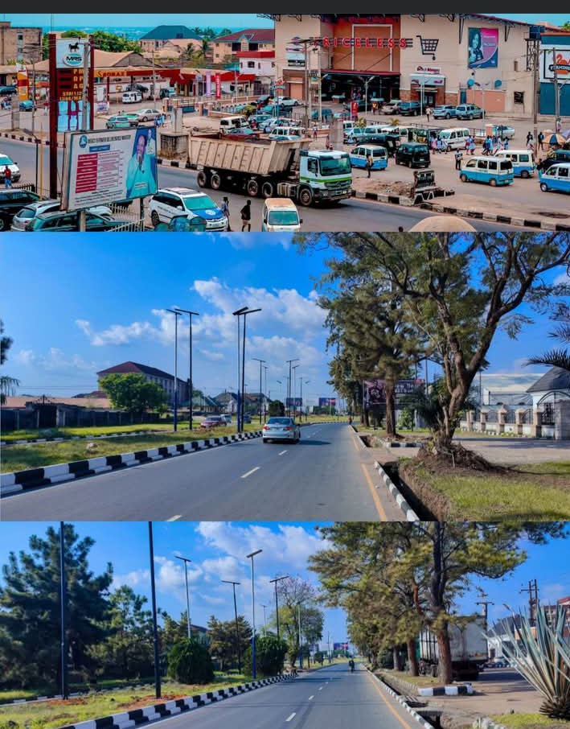

Alagbaoso Solomon Ginikachukwu
About Me
My name is Alagbaoso Solomon Ginikachukwu. I am currently studying web development through WDD 131. I enjoy learning HTML, CSS, JavaScript, responsive web design, and accessibility while building practical websites.
This homepage contains useful course resources and introduces my web development journey. I enjoy solving programming problems and continually improving my design and coding skills.
Imo State, Nigeria

Imo State is located in southeastern Nigeria. It is known for its rich culture, welcoming people, beautiful landscapes, and educational institutions. Living here has inspired me to continue learning technology and software development.
Throughout this course I hope to improve my skills in responsive design, JavaScript programming, and modern web development practices.